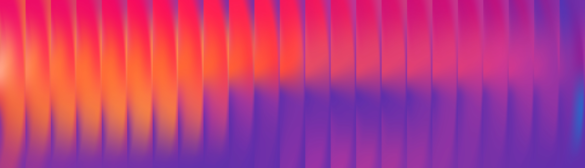
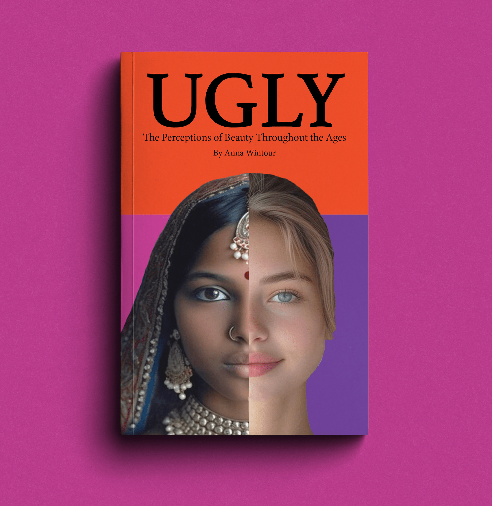

Art and Design Portfolio
 Art has been one of my strongest skills for years, and it is something I truly enjoy doing as a hobby. I especially enjoy drawing, and I paint occasionally, though painting is something I am starting to explore more seriously. Most of my creative time is spent drawing, which allows me to focus on details and practice different techniques. I commonly focus on landscapes and sports logo designs. For landscapes, I often create evergreen forest and mountain scenes, experimenting with lighting and shading to make the scenes feel more realistic and dynamic. In sports logo art, I usually draw the logos of my favorite teams, the Seahawks and Broncos, and I like to create unique and creative variations of their logos.
Art has been one of my strongest skills for years, and it is something I truly enjoy doing as a hobby. I especially enjoy drawing, and I paint occasionally, though painting is something I am starting to explore more seriously. Most of my creative time is spent drawing, which allows me to focus on details and practice different techniques. I commonly focus on landscapes and sports logo designs. For landscapes, I often create evergreen forest and mountain scenes, experimenting with lighting and shading to make the scenes feel more realistic and dynamic. In sports logo art, I usually draw the logos of my favorite teams, the Seahawks and Broncos, and I like to create unique and creative variations of their logos.

My passion for art and fascination with sports logos led me to major in graphic design, and I have created many designs over the past few years. I have designed book covers, campaign materials, digital illustrations, and a variety of other design projects. As I completed more projects, I became increasingly interested in exploring different colors and color palettes, experimenting with how colors interact and create mood or emphasis within my work. I have also grown more interested in typography, learning to pair fonts effectively and understanding how font choices enhance the overall theme and message of each piece. This exploration has helped me develop a stronger sense of visual hierarchy and composition in my designs.